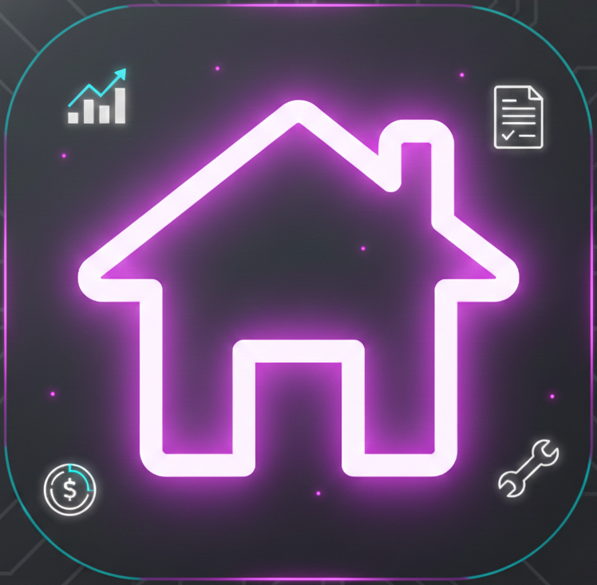

Email confirmed ✓
האימייל אומת ✓
Your email is verified. Open the Ownest app to continue.
ההתחברות אומתה. פתחו את אפליקציית Ownest כדי להמשיך.
If the app didn't open, make sure Ownest is installed on this device, then tap the button above.